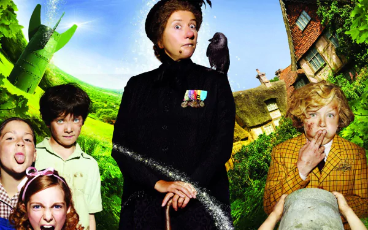

Huriye ACAR
Hakkımda
Merhaba ben Huriye ACAR! İzmir'de yaşıyorum.
Çocuk gelişimi mezunuyum. İlgi alanımın yazılıma
yönelmesinden dolayı bu serüvene başladım. Bana bu imkanı sunduğunuz için
teşekkür ederim
İlgi Alanlarımdan Bazıları
-
Film
-
Dizi
- Vis a Vis
- Anne With an E
- Yasak Elma
-
Kitap
- Dokuzuncu Hariciye Koğuşu
-
1984
- Çalıkuşu

Nanny McPhee leaves surreptitiously, in accordance with what
she told the children before on her first night: "When you need me, but do
not want me, then I must stay. When you want me, but no longer need me,
then I have to go".